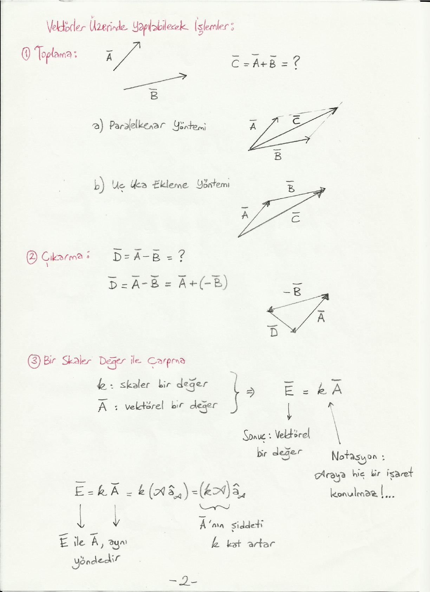
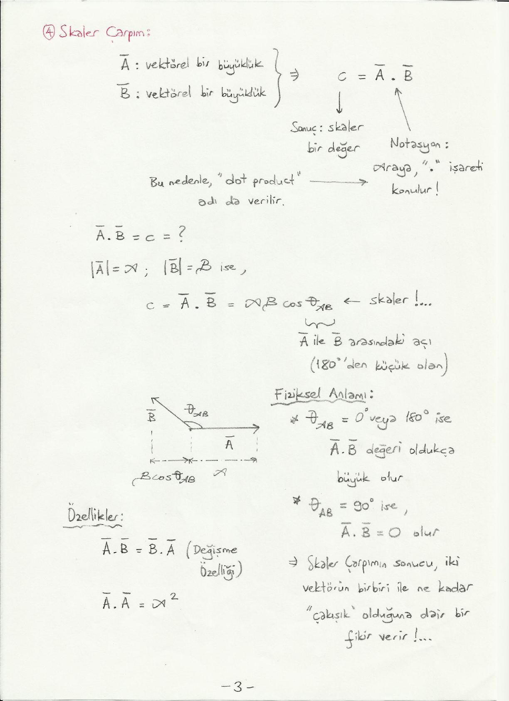
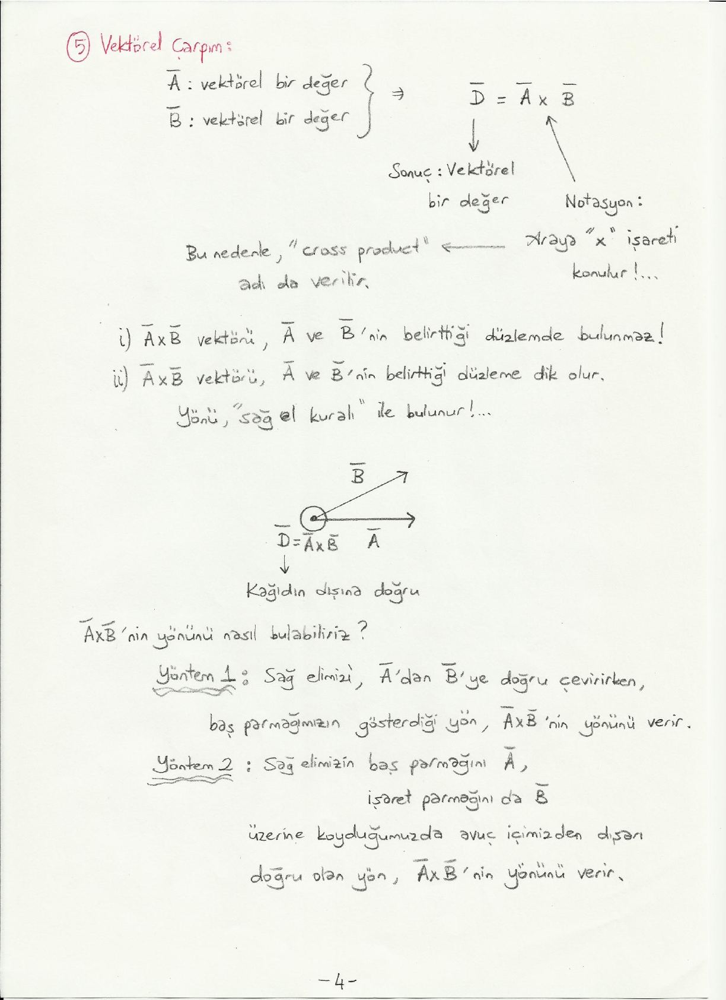
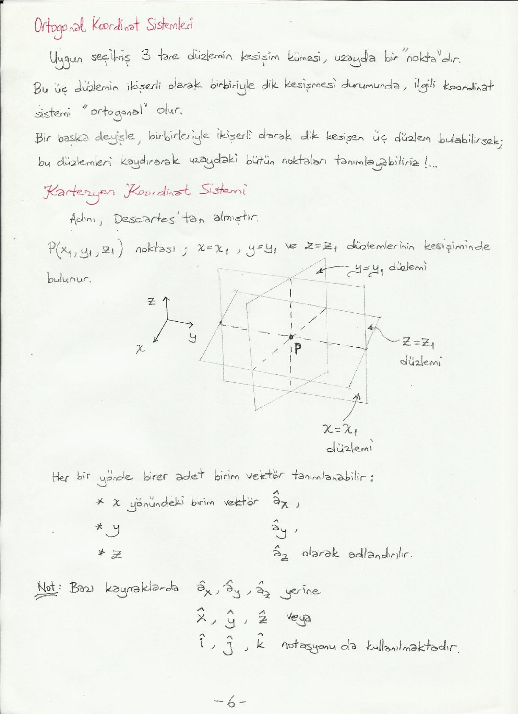
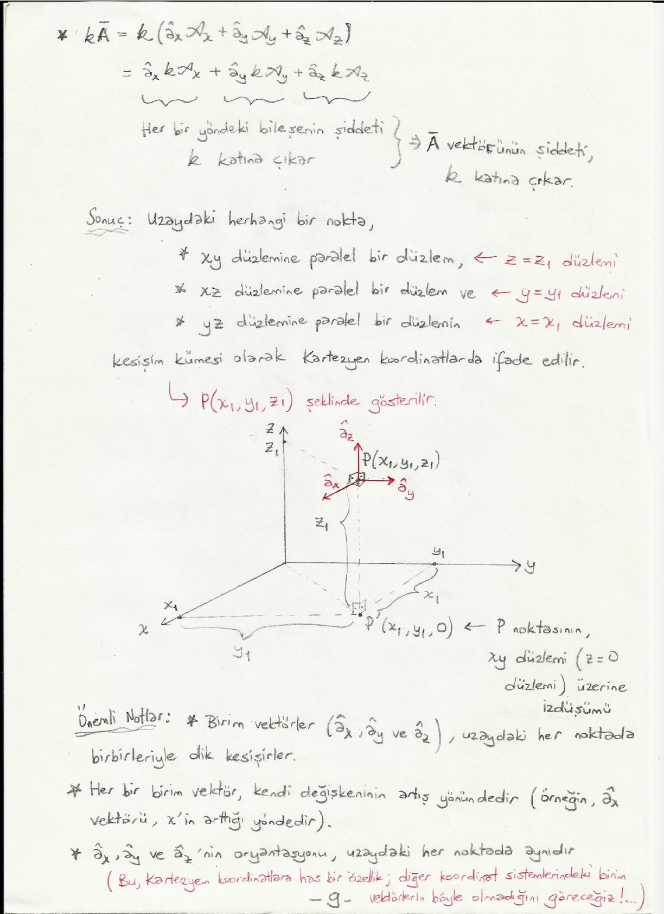

· EEM224
EEM224 Elektromanyetik I: Vektör Analizi – Vektör İşlemleri ve Kartezyen Koordinatlar (El Yazısı Ders Notu)
EEM224 – Elektromanyetik I · 17.03.2015 · 16.10.2026
Bu yazı, Başkent Üniversitesi EEM224 Elektromanyetik I dersine ait el yazısı ders notlarının ilk bölümü olan "Vektör Analizi" notudur (9 sayfa). Notta hazırlayanın adı ve tarih yazmıyor; dosya Dropbox arşivinde ders klasöründe 2015'ten beri duruyor. Aşağıda başlıklar, tanımlar ve formüller metne döküldü; çizimler için ilgili sayfaların görselleri eklendi. Taranmış notun orijinal PDF'i yazının sonunda indirilebilir.
Vektör ve gösterimi
Bir vektör, yönü ve şiddeti ile tanımlanır:
- Ā = â_A A
- â_A: yön, yani birim vektör (büyüklüğü 1 olan vektör)
- A: şiddet (büyüklük, genlik); skaler bir değerdir
Buradan A = |Ā| ve â_A = Ā / |Ā| = Ā / A yazılır.
Genel gösterim (notasyon):
| El yazısı ile | Kitaplarda | |
|---|---|---|
| Vektörel değerler | Ā veya A⃗ (üzerinde "çizgi" veya "ok") | A (kalın yazı tipi), Ā, A⃗ veya altı dalgalı A (özellikle matematik kitaplarında) |
| Birim vektör | â_A (üzerinde "şapka") | kalın a_A veya â_A |
| Skaler değerler | A (normal) | A (italik, eğik yazı tipi) |
Grafikte bir vektör ok ile gösterilir: okun uzunluğu |Ā| = A, aynı yöndeki kısa ok ise |â_A| = 1 olan birim vektördür.
Vektörler üzerinde yapılabilecek işlemler
1. Toplama
C̄ = Ā + B̄ iki yöntemle bulunur:
- a) Paralelkenar yöntemi: Ā ve B̄ aynı noktadan başlatılır; oluşan paralelkenarın köşegeni C̄'dir.
- b) Uç uca ekleme yöntemi: B̄, Ā'nın ucuna eklenir; Ā'nın başlangıcından B̄'nin ucuna giden vektör C̄'dir.
2. Çıkarma
D̄ = Ā − B̄ = Ā + (−B̄)
3. Bir skaler değer ile çarpma
k skaler, Ā vektörel bir değer ise Ē = kĀ sonucu vektöreldir. Notasyon: araya hiçbir işaret konulmaz.
Ē = kĀ = k(A â_A) = (kA) â_A
Ē ile Ā aynı yöndedir; Ā'nın şiddeti k kat artar.

4. Skaler çarpım
Ā ve B̄ vektörel büyüklükler ise c = Ā · B̄ sonucu skaler bir değerdir. Notasyon: araya "·" işareti konulur; bu nedenle dot product adı da verilir.
| Ā | = A ve | B̄ | = B ise |
|---|
c = Ā · B̄ = A B cos θ_AB
Burada θ_AB, Ā ile B̄ arasındaki (180°'den küçük olan) açıdır. B cos θ_AB, B̄'nin Ā üzerindeki izdüşümüdür.
Fiziksel anlamı:
- θ_AB = 0° veya 180° ise Ā · B̄ değeri oldukça büyük olur.
- θ_AB = 90° ise Ā · B̄ = 0 olur.
- Skaler çarpımın sonucu, iki vektörün birbiri ile ne kadar "çakışık" olduğuna dair bir fikir verir.
Özellikler:
- Ā · B̄ = B̄ · Ā (değişme özelliği)
- Ā · Ā = A²

5. Vektörel çarpım
Ā ve B̄ vektörel değerler ise D̄ = Ā × B̄ sonucu vektörel bir değerdir. Notasyon: araya "×" işareti konulur; bu nedenle cross product adı da verilir.
- Ā × B̄ vektörü, Ā ve B̄'nin belirttiği düzlemde bulunmaz.
- Ā × B̄ vektörü, Ā ve B̄'nin belirttiği düzleme dik olur. Yönü sağ el kuralı ile bulunur.
Örnekte Ā sağa, B̄ yukarı-sağa doğru çizilmiş; D̄ = Ā × B̄ kâğıdın dışına doğrudur.
Ā × B̄'nin yönünü nasıl bulabiliriz?
- Yöntem 1: Sağ elimizi Ā'dan B̄'ye doğru çevirirken baş parmağımızın gösterdiği yön, Ā × B̄'nin yönünü verir.
- Yöntem 2: Sağ elimizin baş parmağını Ā, işaret parmağını da B̄ üzerine koyduğumuzda avuç içimizden dışarı doğru olan yön, Ā × B̄'nin yönünü verir.

Şiddet ve yön birlikte:
D̄ = Ā × B̄ = â_n A B sin θ_AB
Burada â_n, Ā ve B̄ vektörlerinin bulunduğu düzleme dik olan yönde (sağ el kuralı ile bulunan yönde) birim vektördür.
Fiziksel anlamı: θ_AB = 0° veya 180° ise Ā × B̄ = 0 olur; θ_AB = 90° ise Ā × B̄'nin şiddeti maksimum olur. Vektörel çarpımın sonucu, iki vektörün birbirine ne kadar "dik" olduğuna dair bir fikir verir.
Özellikler:
- B̄ × Ā ≠ Ā × B̄: değişme özelliği yok!
- B̄ × Ā = −Ā × B̄ (sağ el kuralı ile kolayca görülebilir)
- Ā × Ā = 0
Üç veya daha fazla vektörün çarpımı ile ilgili örnekler
| İfade | Sonuç |
|---|---|
| Ā · (B̄ × C̄) | skaler (vektör · vektör) |
| Ā × (B̄ × C̄) | vektörel (vektör × vektör) |
| (Ā × B̄) × (C̄ × D̄) | vektörel |
| (Ā · B̄) C̄ | vektörel (skaler × vektör) |
Parantezlere ve notasyona çok dikkat etmek gerekir!
Ortogonal koordinat sistemleri
Uygun seçilmiş 3 tane düzlemin kesişim kümesi, uzayda bir "nokta"dır. Bu üç düzlemin ikişerli olarak birbiriyle dik kesişmesi durumunda ilgili koordinat sistemi ortogonal olur. Bir başka deyişle, birbirleriyle ikişerli olarak dik kesişen üç düzlem bulabilirsek, bu düzlemleri kaydırarak uzaydaki bütün noktaları tanımlayabiliriz.
Kartezyen koordinat sistemi
Adını Descartes'tan almıştır. P(x₁, y₁, z₁) noktası; x = x₁, y = y₁ ve z = z₁ düzlemlerinin kesişiminde bulunur.
Her bir yönde birer adet birim vektör tanımlanabilir: x yönündeki birim vektör â_x, y yönündeki â_y, z yönündeki â_z olarak adlandırılır. Bazı kaynaklarda â_x, â_y, â_z yerine x̂, ŷ, ẑ veya î, ĵ, k̂ notasyonu da kullanılmaktadır.

Dolayısıyla uzaydaki herhangi bir vektör â_x, â_y ve â_z cinsinden ifade edilebilir:
Ā = â_x A_x + â_y A_y + â_z A_z
Bu, üç vektörün toplamıdır: â_x A_x, Ā'nın x yönündeki bileşenidir (vektör), diğerleri de y ve z yönündeki bileşenlerdir. Her bir terim bir vektör (â_z) ile bir skalerin (A_z) çarpımı olduğu için arada herhangi bir işaret yoktur.
Vektör işlemlerinin Kartezyen koordinatlarda gösterimi
Ā = â_x A_x + â_y A_y + â_z A_z ve B̄ = â_x B_x + â_y B_y + â_z B_z ise:
Toplama:
Ā + B̄ = â_x (A_x + B_x) + â_y (A_y + B_y) + â_z (A_z + B_z)
Skaler çarpım:
Ā · B̄ = A_x B_x + A_y B_y + A_z B_z
Sebebi â_x, â_y ve â_z arasındaki ilişkidir:
- Birbirlerine dik oldukları için â_x · â_y = 0, â_x · â_z = 0, â_y · â_z = 0
- Birim vektör oldukları için â_x · â_x = |â_x|² = 1, â_y · â_y = 1, â_z · â_z = 1
Çarpım açıldığında (â_x · â_x) A_x B_x terimi kalır, (â_x · â_y) A_x B_y gibi karışık terimler sıfır olur.
Vektörel çarpım: Önce birim vektörler arasındaki ilişki:
- â_x × â_y = â_z; â_y × â_z = â_x; â_z × â_x = â_y
- â_y × â_x = −â_z; â_z × â_y = −â_x; â_x × â_z = −â_y
- â_x × â_x = 0; â_y × â_y = 0; â_z × â_z = 0
İpucu: kolay hatırlamak için x → y → z → x döngüsü; saat yönünde gidiş +, tersi −.
Dokuz terim açılıp sıfır olanlar atılınca:
Ā × B̄ = (A_y B_z − A_z B_y) â_x + (A_z B_x − A_x B_z) â_y + (A_x B_y − A_y B_x) â_z
Elde edilen sonucun aşağıdaki matrisin determinantına eşit olduğu görülür:
| â_x â_y â_z |
Ā × B̄ = | A_x A_y A_z |
| B_x B_y B_z |Notta determinant, ilk iki satır alta tekrar yazılarak çapraz çarpım (Sarrus) kuralıyla açılıyor: A_y B_z â_x + A_x B_y â_z + A_z B_x â_y − A_y B_x â_z − A_z B_y â_x − A_x B_z â_y.
Skaler ile çarpma:
kĀ = k(â_x A_x + â_y A_y + â_z A_z) = â_x kA_x + â_y kA_y + â_z kA_z
Her bir yöndeki bileşenin şiddeti k katına çıkar, dolayısıyla Ā vektörünün şiddeti k katına çıkar.
Sonuç: Kartezyen koordinatlarda bir nokta
Uzaydaki herhangi bir nokta, Kartezyen koordinatlarda
- xy düzlemine paralel bir düzlem (z = z₁ düzlemi),
- xz düzlemine paralel bir düzlem (y = y₁ düzlemi) ve
- yz düzlemine paralel bir düzlemin (x = x₁ düzlemi)
kesişim kümesi olarak ifade edilir ve P(x₁, y₁, z₁) şeklinde gösterilir. P'(x₁, y₁, 0), P noktasının xy düzlemi (z = 0 düzlemi) üzerine izdüşümüdür.

Önemli notlar:
- Birim vektörler (â_x, â_y ve â_z) uzaydaki her noktada birbirleriyle dik kesişirler.
- Her bir birim vektör kendi değişkeninin artış yönündedir (örneğin â_x vektörü, x'in arttığı yöndedir).
- â_x, â_y ve â_z'nin oryantasyonu uzaydaki her noktada aynıdır. Bu Kartezyen koordinatlara has bir özelliktir; diğer koordinat sistemlerindeki birim vektörlerin böyle olmadığını göreceğiz!